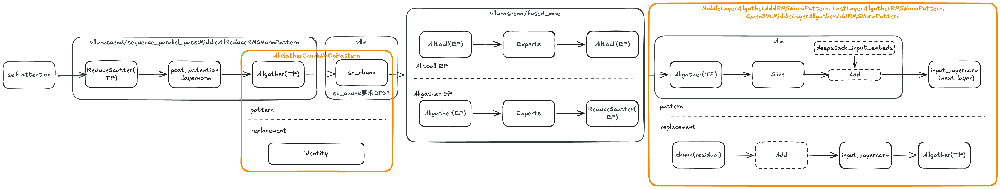

Sequence Parallelism
What is Sequence Parallelism
Sequence Parallelism (SP) was first introduced in Megatron, with the original intention of reducing training activation memory. The core modification was changing Allreduce->LayerNorm to ReduceScatter->LayerNorm->Allgather. This technique was later applied to inference by vllm. It should be noted that splitting Allreduce into ReduceScatter and Allgather does not inherently bring performance benefits; it reduces the computation load of LayerNorm, but this gain is minimal. The real benefits of SP come from:
LLM inference deployment often uses quantization. Taking INT8 quantization commonly used on NPUs as an example, after LayerNorm, a Quant operator quantizes the hidden states from BF16 to INT8. The communication volume of Allgather is halved, and the time consumption is almost halved.
ReduceScatter and Allgather can be fused with the preceding and following Matmul operations respectively into communication-computation parallel operators, reducing latency.
How to Use
Currently, vllm-ascend has implemented Sequence Parallelism for VL-class models based on the Inductor pass. It can be enabled in the following way:
vllm serve Qwen/Qwen3-VL-2B-Instruct \
--tensor-parallel-size 2 \
--compilation-config '{"pass_config": {"enable_sp": true , "sp_min_token_num": 1000}}'
"enable_sp": This is the switch for SP. Since SP relies on graph mode, it is not supported in eager mode.sp_min_token_num(from upstream vllm'spass_config): Based on our experiments, when the number of tokens is small (empirical value is less than 1000), SP can actually bring negative impact. This is because when the communication volume is small, the fixed overhead of the communication operator becomes the dominant factor. SP will only take effect whennum_tokens >= sp_min_token_num. The default value is 1000 on Ascend, which generally does not need to be modified. To customize, use--compilation-config '{"pass_config": {"enable_sp": true, "sp_min_token_num": 512}}'. The value will be appended intocompile_ranges_split_points, which splits the graph compilation range and checks whether the pass is applicable per range.
Without modifying sp_min_token_num, the simplest way and recommended way to enable SP is:
vllm serve Qwen/Qwen3-VL-2B-Instruct \
--tensor-parallel-size 2 \
--compilation-config '{"pass_config": {"enable_sp": true}}'
Difference Between SP and Flash Comm V1
Flash Comm V1 (FC1) is an enhanced version of Sequence Parallelism developed based on NPU. The enhancements include:
For models using the MLA structure, Allgather is postponed until after QKV projection, further reducing communication volume.
For MoE models, Allgather is postponed until after Gating+DynamicQuant, also aiming to reduce communication volume.
FC1 is a unique optimization in vllm-ascend, currently implemented based on Custom OP, but it is difficult to support VL-class models (reasons detailed in [RFC]: support sequence parallelism by pass ). Therefore, currently FC1 and SP are complementary.
Support Matrix
Without Quantization
VL + Dense |
VL + MoE |
non-VL + Dense |
non-VL + MoE |
|
|---|---|---|---|---|
Sequence Parallelism |
graph |
graph |
x |
x |
Flash Comm V1 |
x |
x |
eager/graph |
eager/graph |
With Quantization
SP currently does not support quantization and is under adaptation.
VL + Dense |
VL + MoE |
non-VL + Dense |
non-VL + MoE |
|
|---|---|---|---|---|
Sequence Parallelism |
x |
x |
x |
x |
Flash Comm V1 |
x |
x |
eager/graph |
eager/graph |
Pass Design
When SP is enabled, the following passes run in order: SequenceParallelismPass then SequenceParallelismMoePass.
SequenceParallelismPass
Runs NoOpEliminationPass first to eliminate redundant view-like operations, then applies AllReduce-based patterns:
Pattern |
Match |
Replacement |
|---|---|---|
|
|
|
|
Same (last layer, no residual) |
Same |
|
|
|
Why Qwen3 VL needs special handling by Qwen3VLMiddleAllReduceRMSNormPattern
Qwen3-VL middle layers insert an extra add between all_reduce and layernorm: hidden_states=hidden_states + deepstack_input_embeds. Under SP, hidden_states (i.e., input) is reduced-scattered to shape [seq_len/tp, hidden] per rank, while deepstack_input_embeds comes from the vision/deepstack path and stays full-sequence [seq_len, hidden] (typically replicated across TP ranks). Simply doing reduce_scatter(input) + deepstack_input_embeds would cause a shape mismatch.
The fix is to chunk deepstack_input_embeds by tp_size so each rank uses add(reduce_scatter, chunk(deepstack_input_embeds)[tp_rank]), keeping shapes consistent before layernorm and all_gather.
SequenceParallelismMoePass
After SequenceParallelismPass applies, the MoE model computation graph looks like:

Overview
Postponing allgather: Under SP,
residualis chunked by tensor parallelism. This causes a shape mismatch between hidden states and residual in the next layer's layernorm: hidden states are gathered (full sequence) while residual remains chunked. The fix is to moveall_gatherto after layernorm so that layernorm operates on consistent shapes per rank.MiddleLayerAllgatherAddRMSNormPattern,LastLayerAllgatherRMSNormPattern, andQwen3VLMiddleLayerAllgatherAddRMSNormPatternare designed for this purpose, each handling different layer and structure variants (see the table below).AllGatherChunkNoOp cleanup: When MoE SP is enabled, vllm introduces a
sequence_parallel_chunkop (corresponding tosp_chunkin the diagram). Together with the precedingall_gather, the pair forms a redundant no-op (all_gather gathers, then chunk re-splits).AllGatherChunkNoOpPatternreplaces this pair with identity to eliminate the redundant communication and computation.
Pattern details:
Pattern |
Match |
Replacement |
|---|---|---|
|
|
|
|
Same (last layer, no residual) |
Same |
|
|
add(chunk) + |
|
|
identity (no-op) |
FAQ
Q1: Is SP enabled by default?
No, SP is not enabled by default. SP is currently in the experimental stage and will be enabled by default in the future.
The processing flow of enable_sp in the code is:
In
pass_config,enable_spandsp_min_token_numdefault toNoneNPUPlatform.apply_config_platform_defaults: Ifenable_spisTrueandsp_min_token_numis None, set defaultsp_min_token_num(1000 for Dense models, 1 for MoE models)VllmConfig._apply_optimization_level_defaults:enable_spis set toTruefor dense models.VllmConfig.__post_init__: Ifsp_min_token_numis stillNone, thenenable_spis set toFalse